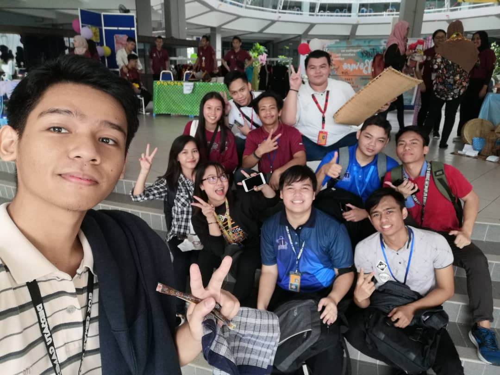
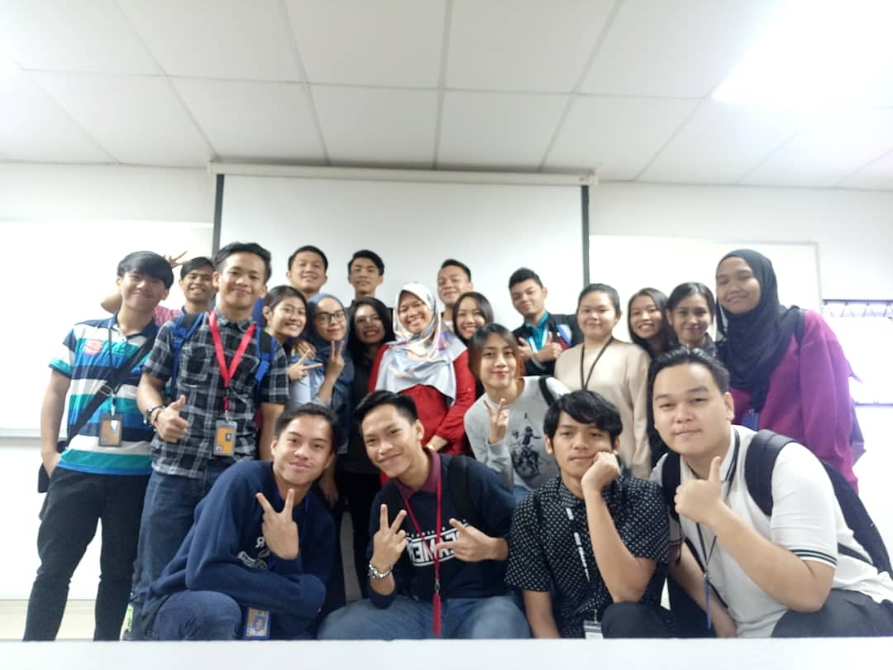

A day in life? The wailings and angst that accompanied the announcement on TV that the MCO or Movement Control Order had been extended because we, Malaysians, have been really stubborn. Feeling nervous and mental breakdown is going to start because all of our assignments and classes need to be done by online. It is kind of weird and having culture shock because this is my first time in my life that I need to stay alert with my online class. Our final exam has been cancelled and University has announced that it will be change to online coursework.During my free time I always go to the kitchen baking horlick cake and dalgona milo. RESEPI KEK HORLICKS|HORLICK CAKE RECIPE
I’m starting to enjoy the calm and the chance to spend more time with the family besides than feeling stress. I also miss my face-to-face interactions with my friends and my lecterur. Nothing much in my daily life because i keep on repeating the same thing. There is a lot of assignment that we received and need to be done in a short period. I always face some difficulty on my assignment and online class because of lack internet connection. I need to arrange my schedule and take some notes to be my reminder so that I can do my tasks.
 